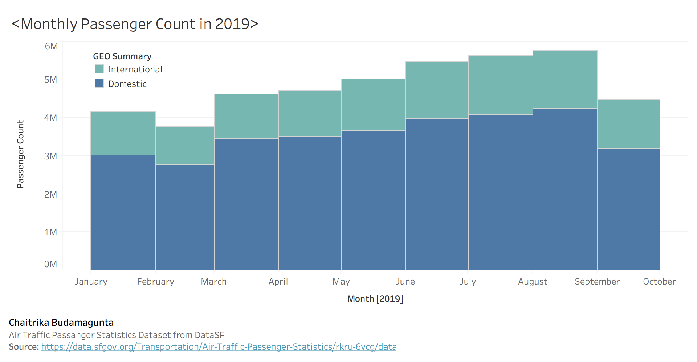
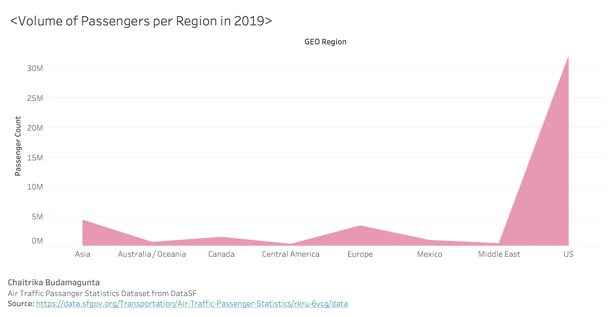

Prototypes
Prototype One
This visualization looks at passenger count per month in 2019, and compares the number of international versus domestic passengers. The length of the bar represents the passenger count, with the stacked bar chart meaning the international passengers must be counted from the top of the domestic passengers bar to the top. To create this prototype, the original datatset was grouped by Activity Period, GEO Summary, and Passenger Count, using filters provided by the dataset website interface. Using this visualization, it can be seen that there is a higher spike of travelers during the summer months (June - August), but also it can be seen that there are always more domestic travellers than international ones.

Prototype Two
This visualization compares the volume of passengers travelling to each region over the course of 2019. The peaks within the colored area indicate number of passengers for that specific region. The data for this prototype was gathered by using the dataset website interface to group the original dataset by GEO region and Passenger Count, restricting the Activity Period to only include 2019. Using this visualization, it can be seen that the largest number of passengers by far travelled to/within the United States, but the number of travellers between Asia and Europe was comparably close, showcasing them as the next two most popular travel spots.

Prototype Three
This visualization showcases the number of passengers who travelled within each price category for each region. The Low Fare and Other Fare tickets are represented with different colors, comparing the numbers for the same region. This prototype was created by grouping the original dataset by Passenger Count, GEO Region, and Price Category Code, using the dataset website interface. Using this visualization, it can ba seen that the United States was the region that had the largest discrepancy in the number of Low Fare and Other tickets, while the other regions did not have as big of a range.